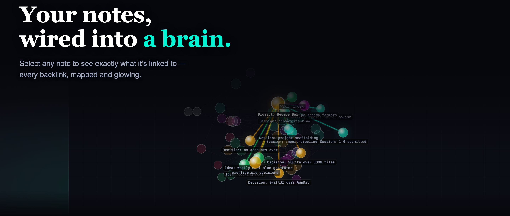
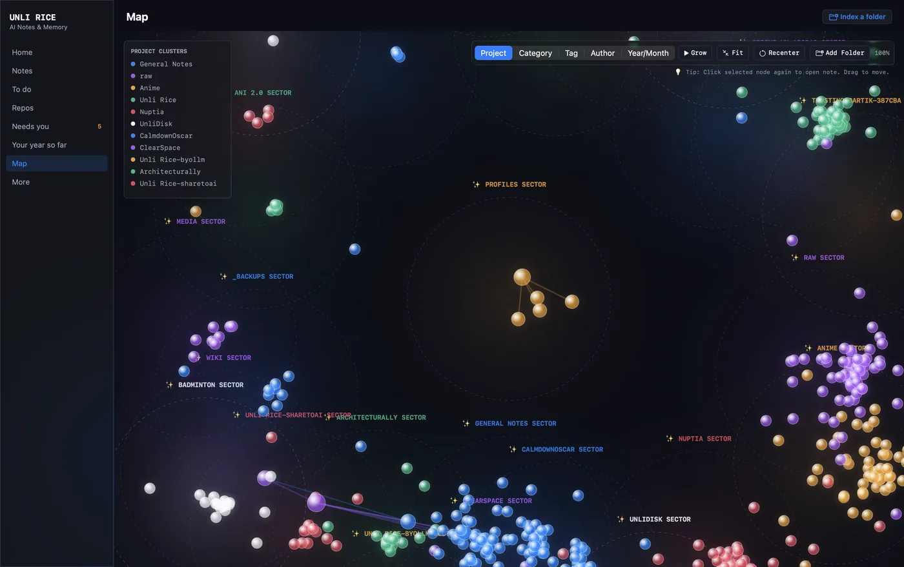
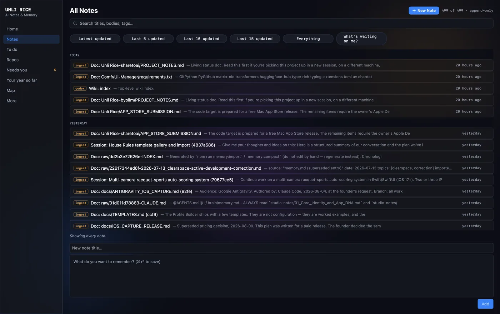
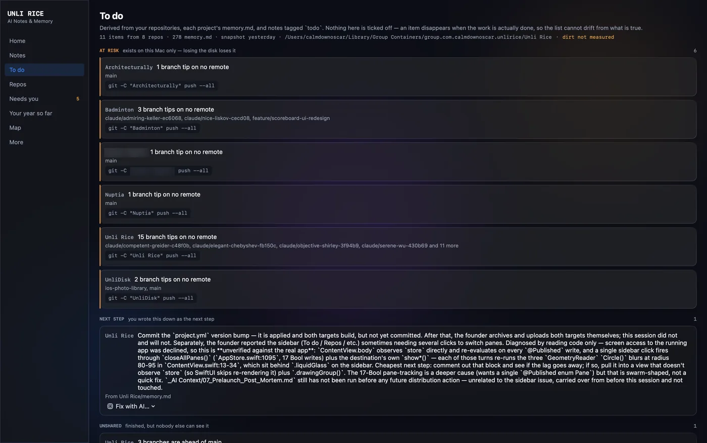

Mac app
One log, every agent reads and writes the same notes
The vault lives on your Mac as an append-only event log — no note is ever silently overwritten, structural changes are proposed rather than applied automatically, and every entry carries the name of the agent that wrote it. Switch from Claude to Codex mid-task and the context is already there.




